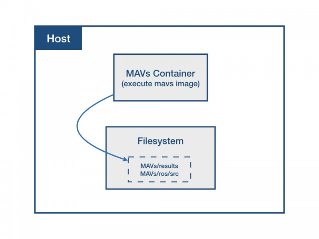

MAVs Dockerfile workflow:
The workflow is consisted of two part, build a image and run a container:
Build a Image:
- Pull the image from avpg/cain:middle
- Build Dockerfile: this Dockerfile mainly copy the source files in ros/ into the container and run “catkin_make” to setup ros workspace.
Dockerfile of avpg/cain:middle:
- Pull the image from avpg/cain:base_cudagl:
- Update Julia packages
- Clone the source code from JuliaMPC/MAVs and build workspace
Inside the Dockerfile of avpg/cain:base_cudagl:
- Build the base image from nvidia/cudagl:9.0-devel-ubuntu16.04
- Install required packages
- Install ROS kinetic
- Install Julia
- Install Chrono
Run a Container:
- Setup PATH variable for later use of volumes when execute docker run.
- docker run command to execute mavs image.
